Columns show normalized τ = 0, 0.5, 1; actual time is scaled by T_end. Rows include every algorithm scheduled by the immutable run plan.
| Algorithm / run status | Start (τ=0) | Midpoint (τ=0.5) | End (τ=1) |
|---|---|---|---|
| branch-and-bound run: run_20261012T042045Z__branch-and-bound__minsum__london-0000030.instance-0928f729f528-3__r00__06a79e3ced8e COMPLETED; feasible=True; verified=True (CERTIFIED_CONTINUOUS); optimality=FEASIBLE | 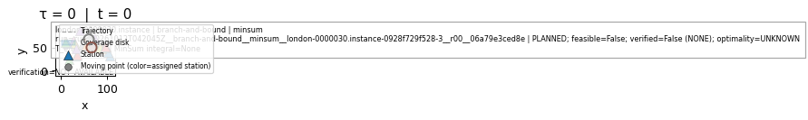 | 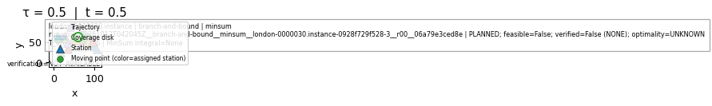 | 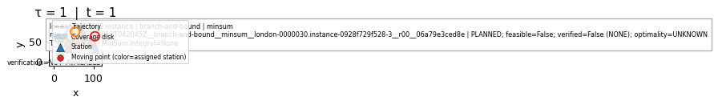 |
| brute-force run: run_20261012T042045Z__brute-force__minsum__london-0000030.instance-0928f729f528-3__r00__f33c927b3354 COMPLETED; feasible=True; verified=True (CERTIFIED_CONTINUOUS); optimality=FEASIBLE | 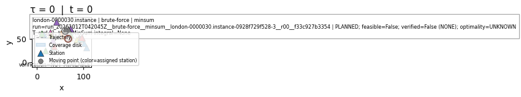 | 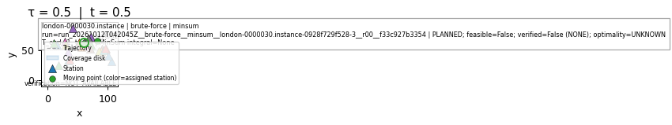 | 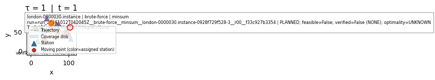 |
| genetic run: run_20261012T042045Z__genetic__minsum__london-0000030.instance-0928f729f528-3__r00__f2276166fcc0 COMPLETED; feasible=True; verified=True (CERTIFIED_CONTINUOUS); optimality=FEASIBLE | 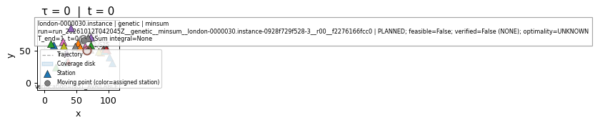 | 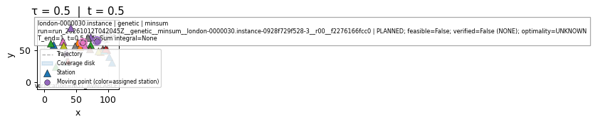 | 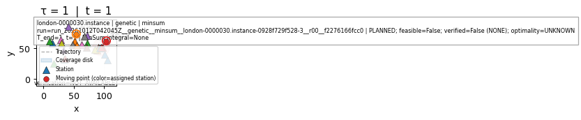 |
| greedy run: run_20261012T042045Z__greedy__minsum__london-0000030.instance-0928f729f528-3__r00__da70606d31e9 COMPLETED; feasible=True; verified=True (CERTIFIED_CONTINUOUS); optimality=FEASIBLE | 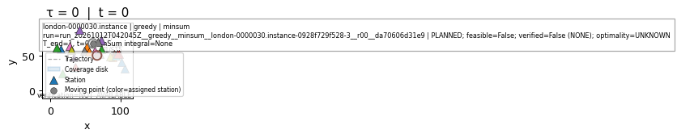 | 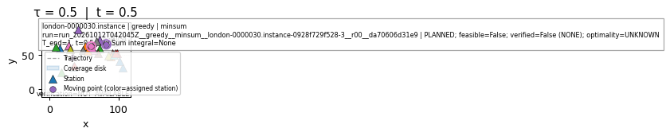 | 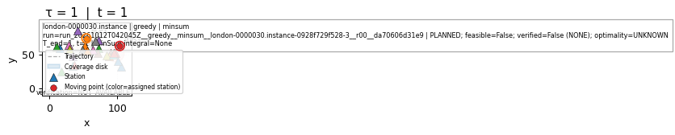 |
| ip-kont run: run_20261012T042910Z__ip-kont__minsum__london-0000030.instance-0928f729f528-3__r00__03ca43581562 SKIPPED; feasible=False; verified=False (NONE); optimality=UNKNOWN | SKIPPED; feasible=False; verified=False (NONE); optimality=UNKNOWN NO_SOLUTION_ARTIFACT | SKIPPED; feasible=False; verified=False (NONE); optimality=UNKNOWN NO_SOLUTION_ARTIFACT | SKIPPED; feasible=False; verified=False (NONE); optimality=UNKNOWN NO_SOLUTION_ARTIFACT |
| local-search run: run_20261012T042045Z__local-search__minsum__london-0000030.instance-0928f729f528-3__r00__e3a8dcbc1a6c COMPLETED; feasible=True; verified=True (CERTIFIED_CONTINUOUS); optimality=FEASIBLE | 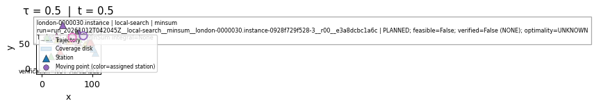 | ||
| lp-rounding run: run_20261012T042046Z__lp-rounding__minsum__london-0000030.instance-0928f729f528-3__r00__5130ed389f91 COMPLETED; feasible=True; verified=True (CERTIFIED_CONTINUOUS); optimality=FEASIBLE | 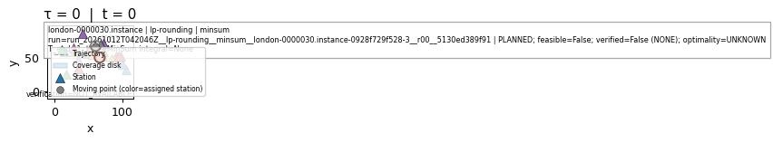 | 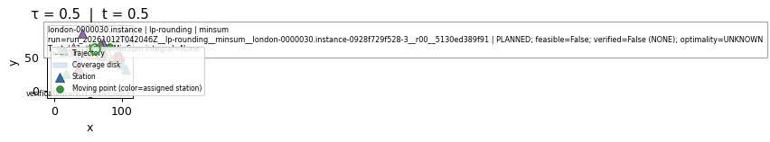 | 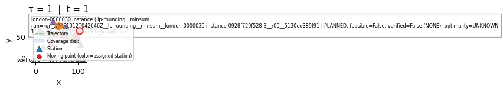 |
| nn run: run_20261012T042046Z__nn__minsum__london-0000030.instance-0928f729f528-3__r00__19ec1338f44d COMPLETED; feasible=True; verified=True (CERTIFIED_CONTINUOUS); optimality=FEASIBLE | 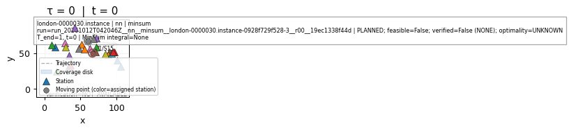 | 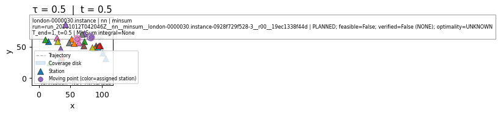 | |
| primal-dual run: run_20261012T042046Z__primal-dual__minsum__london-0000030.instance-0928f729f528-3__r00__de0589c5f712 COMPLETED; feasible=True; verified=True (CERTIFIED_CONTINUOUS); optimality=FEASIBLE | 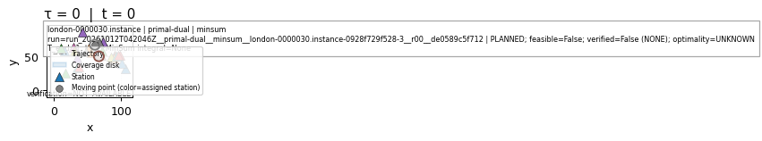 | ||
| sa run: run_20261012T042046Z__sa__minsum__london-0000030.instance-0928f729f528-3__r00__02e5cd375255 COMPLETED; feasible=True; verified=True (CERTIFIED_CONTINUOUS); optimality=FEASIBLE | 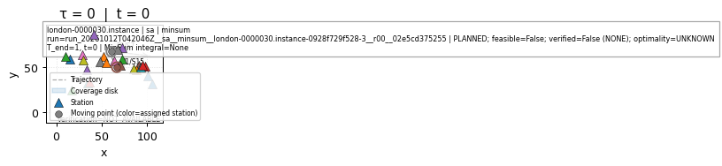 | 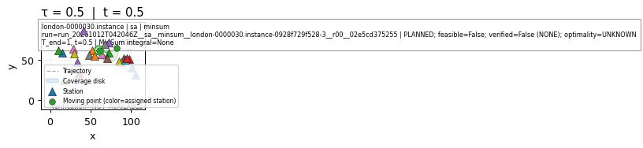 | 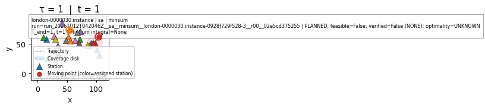 |
| shifting run: run_20261012T042046Z__shifting__minsum__london-0000030.instance-0928f729f528-3__r00__d766166cf227 COMPLETED; feasible=True; verified=True (CERTIFIED_CONTINUOUS); optimality=FEASIBLE | 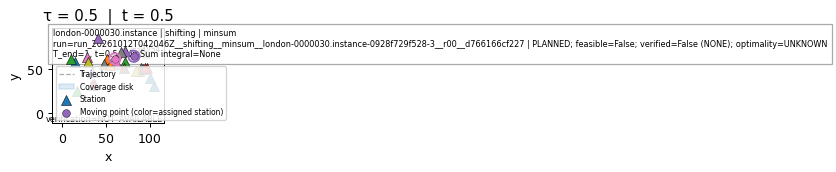 | 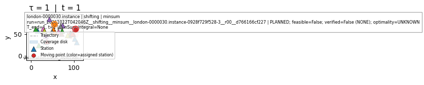 |